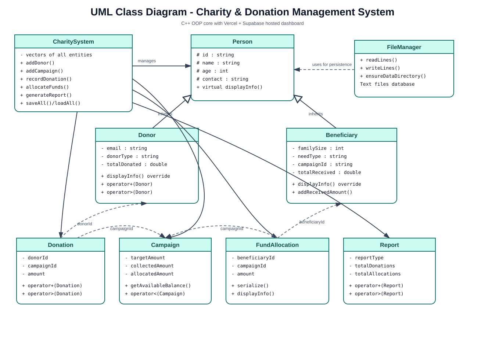
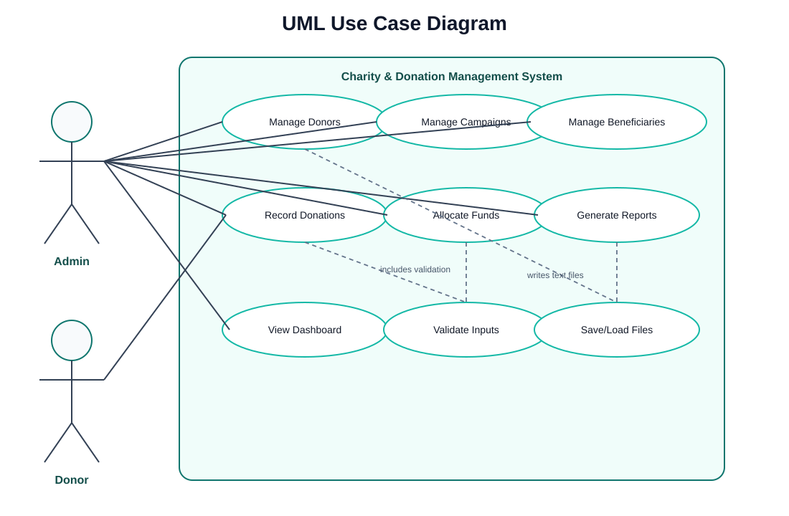

Charity & Donation Management System
OOP Project Report | C++17 Core + Vercel/Supabase Hosted Dashboard
Ali Raza (2540010), Muhammad Ammar (2540004), Taha Ali (2540008)
Problem Definition
Small charities often track donors, campaigns, beneficiaries, donations, and allocations using scattered paper or spreadsheet records. This reduces transparency and donor trust.
Final Solution Design
The project contains a C++ OOP core for course/viva evaluation and a hosted Vercel + Supabase dashboard for live persistent data and professional UI.
Tools
| Area | Technology |
|---|---|
| OOP Core | C++17 |
| Frontend | HTML, CSS, JavaScript, Vite, Vercel |
| Database | Supabase PostgreSQL |
| Auth | Supabase Auth for admin; Donor ID + email for donors |
UML Diagrams
Class Diagram

Use Case Diagram

OOP Concepts
| Concept | Implementation |
|---|---|
| Encapsulation | Private/protected class members |
| Inheritance | Donor and Beneficiary inherit from Person |
| Polymorphism | Virtual displayInfo overridden |
| Constructors | Default, parameterized, overloaded |
| Operator Overloading | +, >, < in core classes |
| File Handling | C++ text files in data/ |
Hosted Web Features
- Donor registration with generated Donor ID
- Donor statement and campaign impact
- Admin dashboard
- Create campaigns and filter active campaigns
- Record donations and allocate funds
- Generate and export reports
Database
Supabase schema is in supabase/schema.sql. Tables include donors, campaigns, beneficiaries, donations, allocations, reports, and profiles.
Validation
Validation exists in the C++ core and Supabase database triggers/functions. Over-allocation is blocked by database logic.
Testing
python3 tests/run_core_tests.py ./build/charity_app validation-demo ./build/charity_app oop-demo
Conclusion
The project preserves strong C++ OOP implementation and provides a reliable, modern hosted dashboard using Vercel and Supabase.